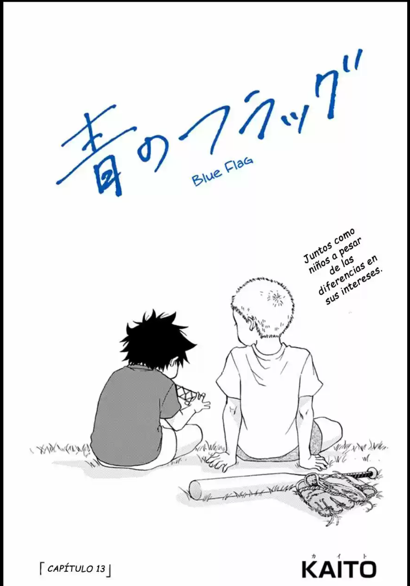
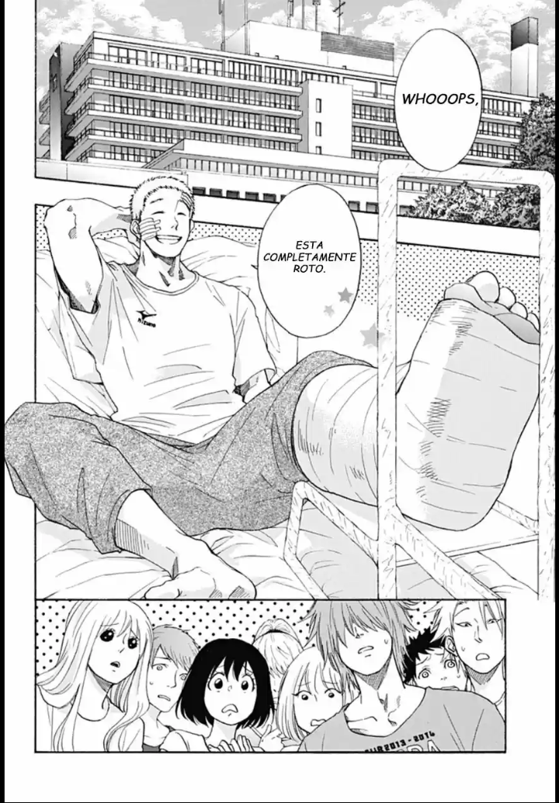

Toma se lastimo protegiendo a Taichi y por culpa de eso no puede participar en el partido en el que se juegan llegar al Koshien. Consciente de ello, Taichi no deja de culparse así mismo. Ambos piensan tanto en el otro que acaban chocando. Futaba, preocupada, invita a Taichia ir a un sitio para que cambie de aires, pero…
 